굴착기는 압력만으로
무게를 얼마나 정확히 알 수 있을까?
답은 압력에 자세와 움직임을 더하는 데 있다. 링크의 질량과 관성을 따로 몰라도, 단계별 보정으로 페이로드와 말단힘을 읽어내는 연구를 살펴본다.
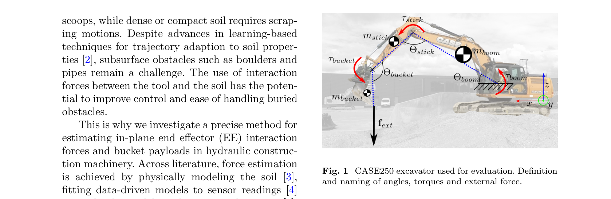
굴착기에 힘 센서를 추가하지 않고도 버킷의 하중을 추정할 수 있을까? 이 연구는 링크 IMU의 관절각·각속도와 붐·스틱 실린더 압력으로 무부하 동역학 모델을 보정한다. 링크별 질량·무게중심·관성을 따로 복원하는 대신, 토크 예측에 필요한 조합인 묶음 파라미터를 식별한다.
핵심은 보정 순서다. 실린더 면적을 구한 뒤 관성, 마찰, 중력을 차례로 분리한다. 이렇게 예측한 무부하 토크와 측정 토크의 차이를 이용해 평면 내 말단힘과 버킷 페이로드를 추정한다. 두 실제 굴착기의 평가에서 페이로드 산포는 3σ 기준 정격 하중의 약 1%로 보고됐다. 다만 정지 마찰, 가속도 잡음, 일부 단순화와 검증 정보의 공백은 남아 있다.
분해 없는 보정
관절당 3세트, 전체 기계 보정 시간 30분 이내로 보고.
정격 대비 페이로드 3σ
측정값 대비 오차율이나 모든 측정의 최대 오차를 뜻하지 않는다.
말단힘 방향 오차
매단 추를 이용한 평가의 보고값. 크기 지표에는 확인할 불일치가 있다.
힘 센서는 없고,
링크 물성도 모른다면
굴착과 정지(整地, grading) 작업에서 버킷과 토양 사이의 힘을 알면 힘 제어와 지하 장애물 대응에 도움이 된다. 그러나 중장비에는 이를 직접 측정할 힘 센서가 없는 경우가 많다. 동역학으로 힘을 계산하려 해도 링크의 질량과 관성을 알아야 한다. 실차를 분해해 측정하기는 어렵고, 제조사 자료도 충분하지 않다.
Werner 등의 연구는 이 문제를 기존 기계에 센서를 덧붙여 보정하는 절차로 접근한다. 압력을 관절 토크로 바꾸고, 기계 자체를 움직이는 토크를 모델링한다. 목표는 물성의 완전한 복원이 아니라 힘·하중 추정에 쓸 수 있는 토크 예측이다.
| 접근 | 노트에 정리된 제약 |
|---|---|
| 정적 토크 경험식 | 관성과 동적 토크를 무시해 사용할 수 있는 동작이 제한된다. Silvy-Leligois & Giroud, Bennett 계열. |
| 선형회귀 페이로드 추정 | 링크 질량·관성에 대한 사전지식이 필요하다. Renner 외, 2020. |
| 유압 포함 EKF | 1축 적용에 한정되거나 유압 구성에 대한 사전지식이 필요하다. Pyrhönen, Khadim 계열. |
| 기존 묶음 파라미터 접근 | 두 관절의 토크 차를 사용하지만 힘 벡터 추정은 지원하지 않는다. Ferlibas & Ghabcheloo, 2021. |
| 데이터 기반 힘 추정 | 학습용 실측 힘이 필요하며, 새로운 조건에 대한 일반화가 중요하다. |
저자들이 제안하는 기여는 세 가지다. 동적 동작과 선회를 포함하는 무부하 토크 모델, 분해 없는 보정 절차, 그리고 이를 이용한 가벼운 힘·페이로드 추정기다. 다만 폭넓은 운전 조건을 목표로 한다는 주장과 실제로 검증된 범위는 구분해야 한다.
개별 질량을 알아내는 대신,
토크를 설명하는 조합을 알아낸다.
압력에서 토크로,
토크에서 기계의 움직임으로
입력은 두 갈래다. 챔버 압력은 실린더 힘과 관절 토크로 변환한다. 링크 IMU의 관절각·각속도는 기구학과 동역학 모델에 넣는다. 밸브·유량·펌프를 따로 모델링하지 않는 이유는 실린더 챔버 압력을 직접 측정하기 때문이다.
관절 기하 → 지렛대 η(Θ)
두 값을 결합해 측정 토크 τm 계산
관성 + 마찰 + 중력 + 선회 원심항
보정된 무부하 토크 모델
매 스텝 대수 계산 · 빈 버킷 가정
질량 1개를 최적화 · 상승/하강 궤적 사용
압력 → 실린더 힘 → 관절 토크
Ap는 플런저 면적, Ar은 로드 단면적이다. a와 c는 관절축에서 실린더 양 핀까지의 거리, b는 핀 간 길이, φ₁·φ₂는 고정 기하각이다. 압력은 Pa, 면적은 m², 길이와 지렛대 η는 m 단위다.
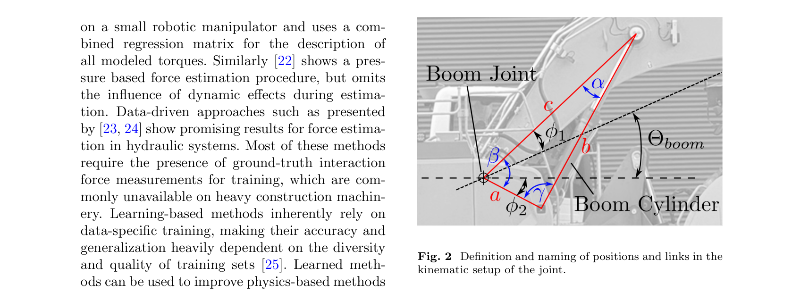
표기 주의: 노트에 전사된 식 (2)는 Θboom, 식 (3)은 β를 사용한다. 미분 형태는 맞지만 두 각의 대응은 저널판에서 확인할 항목으로 남겨둔다.
무부하 모델의 네 성분
관성 + 마찰 + 중력 + 원심 + 외력. 마찰은 아래 식 (20)처럼 측정 토크와 운동 방향에 의존하는 형태로 보정한다.
| 성분 | 모델과 해석 |
|---|---|
| 중력 · 6 + 4개 | 붐은 6개, 스틱은 4개의 sin/cos 계수로 표현한다. 질량과 무게중심을 각각 구하는 대신 이들의 곱과 링크 간 조합을 식별한다. |
| 관성 · 5 + 3개 | 붐 5개, 스틱 3개의 계수. 자체 관성과 평행축 정리의 효과를 상수항·자세 의존항으로 묶는다. |
| 마찰 · 8개 | 관절별 상승·하강에 각각 기울기와 절편을 둔다. 속도 크기보다 측정 토크와의 선형 관계를 사용한다. |
| 선회 · 스케일 1개 | 중력 계수의 sin/cos 배치를 바꾸고 캐빈 선회 각속도의 제곱과 πc를 곱하는 근사다. |
상승·하강에 서로 다른 계수를 적용한다. 압력이 커질수록 패킹 압착과 유압 마찰이 커진다는 관찰에 기초한다.
“묶음”은 단순한 계산 편의가 아니다. 준정적 데이터에서는 질량과 무게중심을 분리할 수 없다. 예를 들어 붐의 중력 계수에는 붐 자체의 질량·무게중심뿐 아니라 뒤에 연결된 스틱과 버킷의 질량도 섞인다. 좋은 토크 예측이 곧 개별 물성의 식별을 뜻하지는 않는다.
한꺼번에 맞추지 않고,
분리할 수 있는 순서로 보정한다
이 연구의 실용적인 기여는 보정의 순서에 있다. 서로 섞인 토크 성분을 한 번에 풀기보다, 특정 성분이 잘 드러나는 움직임을 만든다. 시작 전에 링크 길이, 실린더 연결 기하와 로드 지름을 실측해야 한다.
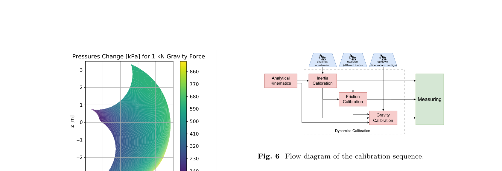
-
실린더 면적 — 알려진 추로 압력의 스케일을 정한다
다른 관절을 고정한 채 추를 달았을 때와 달지 않았을 때의 준정적 왕복을 기록한다. 겹치는 자세 구간에서 팔 자체의 토크를 상쇄하면 플런저 면적을 역산할 수 있다. 평균 면적을 규격표와 비교해 실린더 형식을 고른다.
-
관성 — 흔들림을 방해가 아닌 자극으로 쓴다
자세를 바꾸며 약 10회 왕복하고 급가속·차체 흔들림을 유도한다. 관성 토크를 뺀 잔차의 0.5–3 Hz 대역 성분을 줄이도록 계수를 맞춘다. 가속 신호와 차체 고유진동수가 겹쳐 단순 저역통과로는 분리하기 어렵다는 점을 활용한다.
-
마찰 — 같은 자세에서 올라갈 때와 내려갈 때를 비교한다
완전히 접은 상태부터 펼친 상태까지 네 자세를 사용한다. 상승·하강 토크 궤적에 2차 곡선을 맞춘 뒤, 두 곡선의 차이에서 마찰을 추출하고 측정 토크에 대해 선형 적합한다.
-
중력 — 남은 자세 의존 토크를 맞춘다
작업영역 전반에서 흔들림이 작은 왕복 데이터를 수집한다. 앞에서 식별한 관성과 마찰을 반영한 뒤, 중력 묶음 파라미터를 최소제곱으로 구한다.
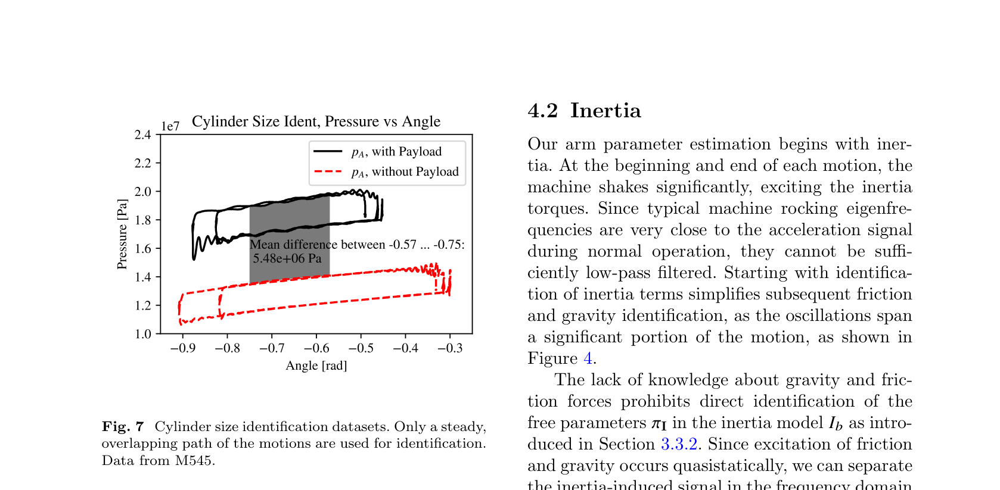
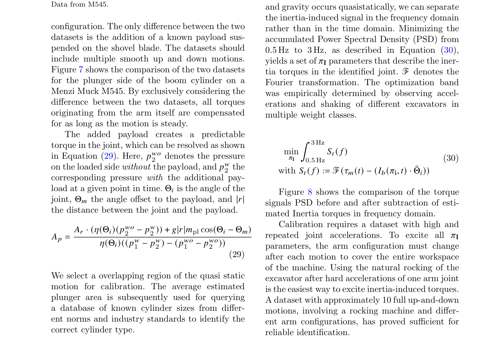
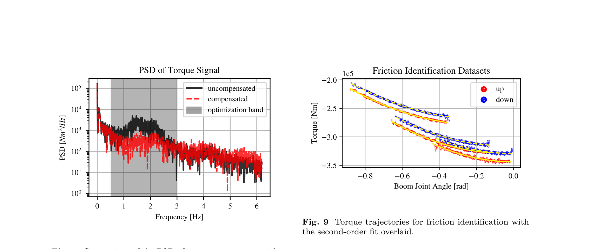
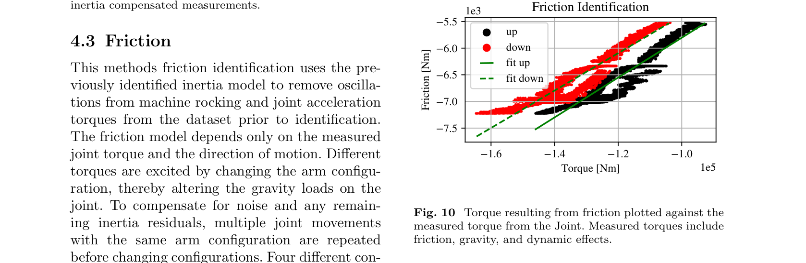
전체 기계 보정 시간은 30분 이내로 보고된다. 이 숫자와 함께 볼 것은 자극의 구성이다. 알려진 추, 자세를 바꾸는 움직임, 충분한 관성 자극, 반복 가능한 상승·하강 궤적이 있어야 각 성분을 분리할 수 있다.
같은 잔차에서,
힘과 무게를 다르게 읽는다
말단힘은 순간별로 계산한다
빈 버킷을 가정하면 붐·스틱의 토크 잔차 두 개로 평면 내 힘 벡터를 계산한다. 날 끝 위치를 붐·스틱 관절각으로 미분한 2×2 자코비안 J를 사용한다.
매 스텝 대수 계산이므로 반복 최적화는 필요 없다. 다만 역행렬을 쓰는 구조상 J가 가역이어야 한다. 이는 수식에서 따라오는 구현 조건이며, 특이 자세의 처리 방식은 제공 노트에서 확인되지 않는다.
페이로드는 동작 전체에서 맞춘다
페이로드는 붐 토크만 사용한다. 한 번의 상승·하강 동작에서 얻은 수백 샘플을 모아, 질량 mpl 하나를 Nelder–Mead로 최적화한다. 하중 모델에는 중력, 선회 원심력, 붐 가속에 의한 관성을 넣는다.
임베디드 환경에서 보고된 최적화 시간은 평균 0.4초, 최대 1.4초다. 약 30초의 굴착 사이클에 비하면 짧지만, 매 샘플 산출하는 힘 추정과는 시간 단위가 다르다. 또한 정지 상태는 스틱션 때문에 사용하지 않는다. 붐이 움직여야 이 마찰 모델을 적용할 수 있다.
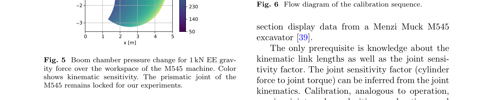
“1% 정확도”를 읽는 정확한 방법
실험은 Menzi Muck M545와 CASE250에서 수행됐다. 노트에는 M545가 “12 t급”으로도 소개되지만, 실험 제원 표에는 13.5 t로 기재돼 있다. 아래는 제원 표를 기준으로 정리한 값이다.
| 항목 | 구성 |
|---|---|
| Menzi Muck M545 | 13.5 t · 붐 2.8 m · 스틱 2.1 m · 프리즘 관절 잠금 |
| CASE250 | 25 t · 붐 5.8 m · 스틱 3.0 m |
| 관절 센서 | Leica iCON, 링크별 MSS40x IMU · 관절 위치·속도 50 Hz |
| 가속도 처리 | 최근 5점의 1차 적합으로 미분 · 위상 정렬을 위해 다른 신호도 5점 평균 |
| 압력 센서 | Wika P30 · 붐·스틱 실린더 챔버에 직접 연결 · 중간 유압 요소 없음 |
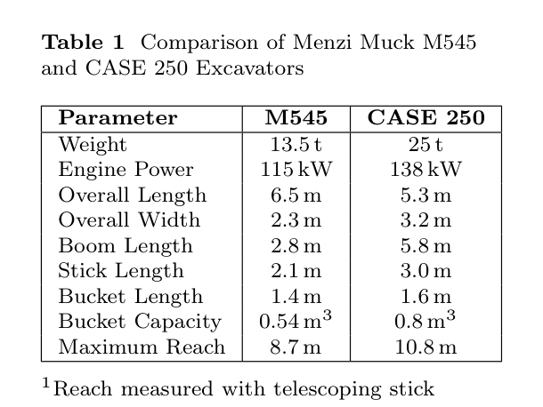
페이로드: 평균 오차보다 산포의 기준을 보자
| 지표 | CASE250 | M545 |
|---|---|---|
| 제안 방법의 보고 오차 | 5.7 | 4.5 |
| 제안 방법의 표준편차 σ | 30.4 | 20.0 |
| 준정적 기준의 보고 오차 | 264.7 | 2263 |
| 상용 시스템의 보고 오차 | 101.7 | 51.3 |
| 3σ / 정격 하중 | 91.2 / 9210 ≈ 0.99% | 60 / 6000 = 1.00% |
“보고 오차”와 표준편차를 구분했다. 원자료가 없어 통계량을 재현하지 않았으며, 비교값을 임의로 RMSE나 절대오차로 재정의하지 않았다. 정격 하중의 제조사별 자세·리치 조건은 별도 확인이 필요하다.
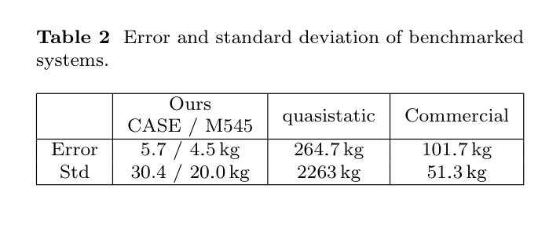
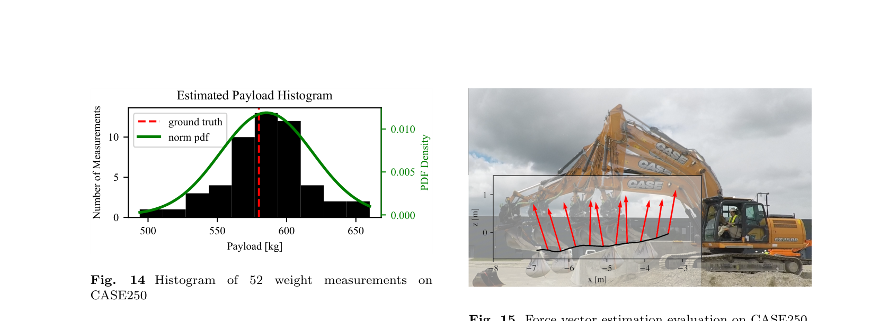
토크와 말단힘: 정량 결과의 조건
| 평가 | 보고 결과 | 함께 볼 조건 |
|---|---|---|
| 무부하 토크 추종 | 5초 상승 동작에서 운동 중 추종, 정지 구간에서 오차 | 정지 마찰은 모델에 포함되지 않는다. Fig. 12. |
| 중력 토크 작업영역 오차 | 평균 644 N·m 98백분위 2186 N·m | CASE250, 15개 궤적. 정지·급가속 구간을 제외한 영역의 평가다. Fig. 13. |
| 말단힘 크기 | 참값 5689.8 N 추정 평균 6183 N 표준편차 452 N | 580 kg 매단 추, 5회의 정지(整地) 동작, 50 Hz 전체 샘플. 추의 흔들림이 영향을 준다. |
| 말단힘 방향 | 오차 13° 표준편차 9.2° | 매단 추를 사용한 해당 평가의 결과다. |
| 실행 시간 | 페이로드 평균 0.4초, 최대 1.4초 힘 벡터는 매 스텝 고정 크기 대수 연산 | 페이로드는 동작 묶음 단위, 힘은 순간 단위로 추정한다. |
좋은 잔차 모델에도 경계는 있다
측정 토크에서 모델 토크를 빼는 방식은 단순하고 빠르다. 동시에 남아 있는 모델 오차가 외력으로 해석될 수 있다. 이 연구를 다른 장비나 작업으로 가져갈 때는 다음 조건을 다시 확인해야 한다.
| 현재 경계 | 추정에 주는 영향과 다음 단계 |
|---|---|
| 정지 마찰 미모델 | 정지 구간의 토크 잔차를 곧바로 하중으로 볼 수 없다. 정지 마찰을 포함한 모델이 후속 과제다. |
| 단순한 마찰식 | 토크 선형·방향 비대칭 모델과 파라미터 오차가 오프셋을 만든다. 온도나 접촉 작업으로의 적용 범위는 별도 검증해야 한다. |
| 가속도 잡음 | 자이로 신호를 미분하므로 고동적 구간의 관성 토크가 불확실해진다. |
| 기름 이동·기체 기울기 | 실린더 내외의 기름 이동에 따른 무게중심 변화는 미모델이다. 평지 가정과 피치·롤 보정의 잔여 오차도 고려해야 한다. |
| 동역학 단순화 | 버킷 토크 미사용, 코리올리 생략, 선회 원심항의 단일 스케일 근사. 고속 다관절 운동에서는 재검토가 필요하다. |
| 검증 설계의 공백 | 보정과 평가에 다른 동작을 썼다는 설명은 있으나 명시적 홀드아웃 분할은 없다. 두 기체의 결과가 보정값의 무변경 전이를 입증하는 것은 아니다. |
| 굴착 접촉 평가 | 실제 굴착 중 평가는 정성적으로 정리돼 있다. 매단 추의 결과만으로 토양 접촉력의 동일한 정확도를 보장할 수 없다. |
저자들이 제시한 다음 단계는 더 정교한 마찰 모델, 코리올리 항의 포함, 식별 모델을 넣은 관측기, 보정 궤적 자동 생성, 미모델 동역학의 학습이다. 이 중 관측기와 보정 자동화는 현재 방법을 말단 임피던스 제어와 지하 충돌 인지로 연결하는 방향이다.
HR35에 가져올 것은
숫자보다 식별의 순서다
제공 노트는 HR35의 경사계·실린더 압력 구성과 이 연구의 유사성에 주목한다. 아래는 논문의 실험 결과가 아니라 HR35 적용을 위한 노트 작성자의 해석이다. HR35 관련 수치와 현장 조건은 이 논문이 검증한 사항이 아니다.
먼저 압력의 단위와 측정 위치를 확정한다
압력 카운트를 Pa 또는 bar로 변환할 수 있어야 한다. 센서가 실린더 챔버에 직접 연결돼 있는지도 확인해야 한다. MCV 쪽 측정이라면 논문의 계측 조건과 차이가 생긴다. 이 두 조건이 동역학 식별보다 먼저다.
준정적 면적 식별부터 시작할 수 있다
알려진 추의 질량·매단 위치·방향, 로드 지름, 다른 관절을 고정한 추 유무 왕복 2세트가 필요하다. 노트는 20 Hz 경사계로도 준정적 실험이 가능하다고 판단한다. 버킷 보어 Ø70/Ø80 후보를 구분하는 데 적용하려면 해당 관절의 기하와 토크 감도를 따로 확인해야 한다.
중력 계수는 디지털 트윈의 제약으로 쓴다
식별되는 10개의 중력 계수는 개별 링크 질량이 아니다. 노트의 기존 개별 질량 후보 182/122/92 kg과 총중량 3507 kg은 별도 정보다. 묶음 계수는 트윈의 질량·무게중심 배치가 만족해야 할 제약으로 사용하는 편이 타당하다.
관성 식별에는 센서와 주파수 대역을 다시 설계한다
노트가 제시한 HR35 붐 계통 모드는 3.0–3.3 Hz로 논문의 0.5–3 Hz 대역 끝에 걸린다. 20 Hz 경사계 차분의 잡음도 우려된다. 링크 IMU 100 Hz 이상은 노트의 실용적 제안이며, 논문이 입증한 필수 하한은 아니다.
마찰 모델은 현장 데이터로 비교한다
논문의 토크 비례·방향 비대칭 모델과 기존 트윈의 쿨롱+점성 모델을 상하 왕복 데이터에서 비교할 수 있다. 노트의 S1–S6 시험처럼 상승·하강 토크 차를 부하와 속도에 대해 살펴보는 방식이다. 공중에서 식별한 관계를 접촉 굴착에 적용하려면 더 큰 하중 범위에서도 성립하는지 확인해야 한다.
선회 근사는 결합 효과를 살피는 출발점으로 쓴다
πc 하나를 쓰는 원심항은 선회와 팔 운동의 결합을 대략 비교하는 데 활용할 수 있다. 다만 노트의 덤프 자세 흔들림과 “선회 가속 2.54배” 관찰을 설명하려면, 각속도 제곱 기반의 원심항만으로 충분한지 별도 검증해야 한다.
더 잘 재려면,
먼저 무엇을 구분할 수 있는지 알아야 한다.
이 연구의 강점은 제조사 물성표 없이도 현장 데이터로 쓸 만한 토크 모델을 만드는 데 있다. 압력의 스케일을 정하고, 관성과 마찰을 분리하고, 마지막에 중력을 맞춘다.
가져갈 결론은 두 가지다. 묶음 파라미터만으로도 하중 추정은 가능하다. 그러나 정격 대비 1%라는 숫자는 보정 절차, 움직임의 조건, 평가 지표와 함께 읽어야 한다.
수식과 시스템 식별 기록
본문의 흐름을 유지하기 위해 긴 수식과 재사용에 필요한 조건을 모았다. 아래 식 번호는 제공 노트의 arXiv v1 표기를 따른다. Θb, Θs, Θbu는 각각 붐·스틱·버킷 관절각이다.
중력: 각도 기저에 대한 선형 계수
+ πbg,5 cos(Θb + Θs + Θbu) + πbg,6 sin(Θb + Θs + Θbu)(13)
+ πsg,9 cos(Θb + Θs + Θbu) + πsg,10 sin(Θb + Θs + Θbu)(14)
ノ트의 독립 전개에서는 식 (6)~(9)의 cos/sin 항을 모아 다음과 같은 계수를 얻었다. 뒤쪽 링크 질량이 앞 링크의 계수에 들어가므로, 계수만으로 개별 질량을 역산할 수 없음을 보여준다.
πbg,2 = −g mboomcogboom,z
논문의 별도 주장으로 인용한 식이 아니라 제공 노트의 항별 전개다.
관성: 평행축 정리와 자세 의존성
+ πbI,4[2lboom cos(Θs + Θbu) + 2lstick cos Θbu]
+ πbI,5[2lboom sin(Θs + Θbu) + 2lstick sin Θbu](18)
dは回転軸から各リンク重心までの距離。dst²とdbu²の姿勢依存性は原論文の式 (16)(17)に対応する。
선회 원심항의 근사
+ πbg,4 cos(Θb + Θs) + πbg,3 sin(Θb + Θs)
+ πbg,6 cos(Θb + Θs + Θbu) + πbg,5 sin(Θb + Θs + Θbu)](21)
중력 계수의 sin/cos 배치를 바꿔 수평 가속에 의한 토크를 근사한다. 뒤 링크까지의 거리 효과에서 생기는 근사 오차를 πc 하나로 흡수하며, 선회가 포함된 데이터 한 세트로 식별한다고 정리돼 있다.
말단 기구학과 페이로드 토크
C와 r은 회전·위치 성분이다. 식 (28)은 노트의 축약 표기를 유지했으며, 붐 토크를 구성할 때 식 (25)(26)의 관절 토크 벡터에서 붐 성분을 사용한다. 식 (27)은 점질량 관성 근사로 읽을 수 있다.
보정 비용함수와 면적 식별식
/ {η(Θi)[(p₁w − p₂w) − (p₁wo − p₂wo)]}(29)
wo: 추 없음 · w: 추 있음 · |r|: 관절–추 거리 · Θm: 추 방향 오프셋. 분모가 작은 자세는 면적 추정의 조건을 나쁘게 만든다는 것이 노트의 해석이다.
St(f) := ℱ(τm(t) − Ib(πI, t)Θ̈i)(30)
노트가 전사한 표기다. 절차는 잔차 토크의 PSD 대역 최소화로 설명되지만, ℱ만으로 적힌 식의 PSD 정의·정규화는 제공 정보만으로 확정하지 않는다.
재사용을 위한 식별 추출표
| 입력·상태·출력 | 운전자 조작 아래 Θ, Θ̇, 미분한 Θ̈, p₁·p₂를 기록한다. 출력은 측정 토크, 토크 잔차, 말단힘, 페이로드다. 밸브·유량·펌프 상태는 모델에 없다. |
|---|---|
| 추정 대상 | 대상 실린더의 Ap, 중력 πg(6+4), 관성 πI(5+3), 마찰 πf(2×2×2), 선회 πc(1). 이후 mpl과 fext를 추정한다. |
| 고정 정보·가정 | 링크 길이·핀 기하·로드 면적은 실측. 평지 기준, 코리올리 생략, 버킷 토크 미사용. 캐빈 피치는 붐 각 오프셋, 롤은 힘 스케일로 보정한다고 정리돼 있다. |
| 좌표·부호 | 붐축 원점·중력 정렬. 국소 무게중심 좌표는 관절축 원점이며 x축은 다음 관절 방향. 힘 부호는 식 (23)의 −J−T를 따른다. |
| 식별 가능성 | 개별 m, cog, Izz는 묶음 계수로부터 유일하게 분리되지 않는다. 단계별 자극은 묶음의 실용적 식별을 돕지만, 수치 조건성의 정량 검증은 노트에서 확인되지 않는다. |
| 데이터 제외 규칙 | 면적은 추 유무의 겹치는 준정적 구간. 하중 추정은 정지 구간 제외. 중력 오차 평가에서는 정지·급가속 구간 제외. |
| 최적화·제약 | 면적 대수 해, 관성 대역 최소화, 마찰 곡선·선형 적합, 중력 최소제곱, 페이로드 1변수 Nelder–Mead. 물리 일관성 제약은 사용하지 않은 것으로 정리돼 있다. |
| 잡음·폐루프 | 반복·평균·주파수 분리로 잡음에 대응한다. 운전자 폐루프 아래 기록하지만 제어기 편향에 대한 별도 논의는 없다. |
| 일반화·불확실성 | 두 기체와 다양한 평가 동작을 사용한다. 명시적 홀드아웃 분할은 없고 불확실성은 주로 표준편차로 제시된다. |
| 코드·데이터 | 제공 노트가 읽은 본문에서는 저장소·데이터 링크가 확인되지 않았다. 현재 공개 여부를 별도로 검증한 것은 아니다. |
주장, 검산, 미확인을 분리하기
아래 계산은 보고 숫자 사이의 정합성을 확인하는 산술 검산이다. 원자료 기반의 오차 통계 재현이나 새로운 실험 검증과는 구분한다.
| 논문에서 인용한 주장 | 검산·해석 | 판정 또는 미확인 |
|---|---|---|
| 페이로드 3σ ≈ 정격 1% | CASE: 3×30.4/9210 = 0.99% M545: 3×20.0/6000 = 1.00% | 산술 일치. 정격 하중의 자세·리치 조건은 확인 필요. |
| 580 kg 추 = 5689.8 N | 580×9.81 = 5689.8 | g = 9.81 m/s²에서 일치. |
| 6 m에서 약 36 kg 환산 | 2186/(9.81×6) = 37.1 kg 644/(9.81×6) = 10.9 kg | 약 3% 차이. 정확한 리치 확인 필요. 2186 N·m은 표에서 98백분위이며 관측 최대값으로 바꾸어 읽지 않는다. |
| 초록의 크기 정확도 383 N | 본문 평균값의 편차는 493.2 N, 표준편차는 452 N | 통계 정의·평가 세트의 대응 미확인. 저널판 대조 필요. |
| 식 (3) 지렛대 | d√(a²+c²−2ac cos θ)/dθ = ac sin θ/b | 미분 형태 일치. Θboom와 β의 표기 대응은 미확인. |
| 식 (29) 면적 | F = Ap(p₁−p₂)+Arp₂와 추 유무 토크 차를 결합하면 같은 형태를 얻는다. | 대수 형태 일치. 실제 면적 재계산에 필요한 일부 실험값은 미기재. |
| 식 (27) 관성 토크 | rad/s² × m² × kg → N·m | 차원 일치. 점질량 근사로 해석. |
| 코리올리 두 자릿수 작음 | 노트의 Fig. 3 판독: 중력 약 10⁵ N·m, 코리올리 약 10³ N·m | 시뮬레이션 조건에서의 비교. 모델 출처와 고속·소형 기체 적용은 추가 확인. |
| 정상 작업영역 감도 3배 | Fig. 5 전체 눈금 50~860 kPa/kN은 약 17배 | “정상 작업영역” 정의가 없어 3배를 독립 재계산하지 못함. |
서지와 판본
-
Calibrated Dynamic Modeling for Force and Payload Estimation in Hydraulic Machinery
Lennart Werner, Pol Eyschen, Sean Costello, Pierluigi Micarelli, Marco Hutter.
ETH Zürich Robotic Systems Lab; Hexagon AB.
Construction Robotics, 2025.
저널 DOI · 10.1007/s41693-025-00169-7 -
제공 노트가 지정한 열람 판본
arXiv:2510.11574v1 · 18쪽 · 노트상 제출일 2025-10-13.
쪽·식·그림 번호는 이 판본 기준이다. 노트는 저널 확정판을 확보하지 못했다고 명시한다. - 그림과 표 본문 그림 1·2·5·6·7·8·9·10·14 및 표 1·2는 제공된 로컬 추출 이미지를 사용했다. 개념도는 요약 노트의 아키텍처를 HTML/CSS로 재구성했다. 외부 이미지·스크립트·스타일시트는 사용하지 않는다.
- 검토 범위 노트는 수식을 PDF 4~12쪽의 렌더링과 대조했다고 기록하며, 특히 텍스트 추출이 깨진 식 (3)·(29)를 확인했다고 설명한다. 이 문서의 편집 과정에서 PDF나 원자료를 새로 검증한 것은 아니다.
이 글은 논문 내용을 설명하는 연구 해설이다. 논문의 보고값, 제공 노트의 검산, HR35 적용에 대한 의견은 각각의 근거 범위 안에서 제시했다.